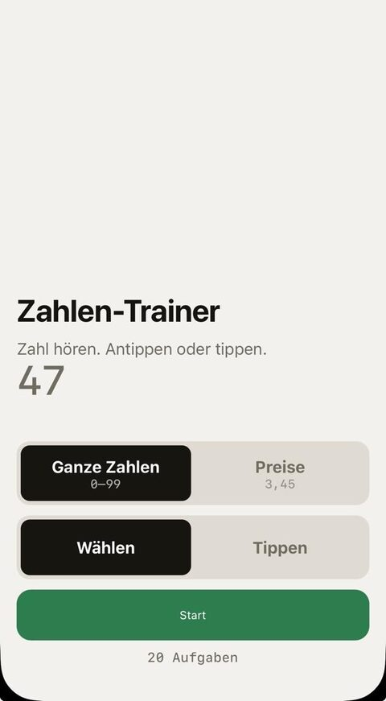
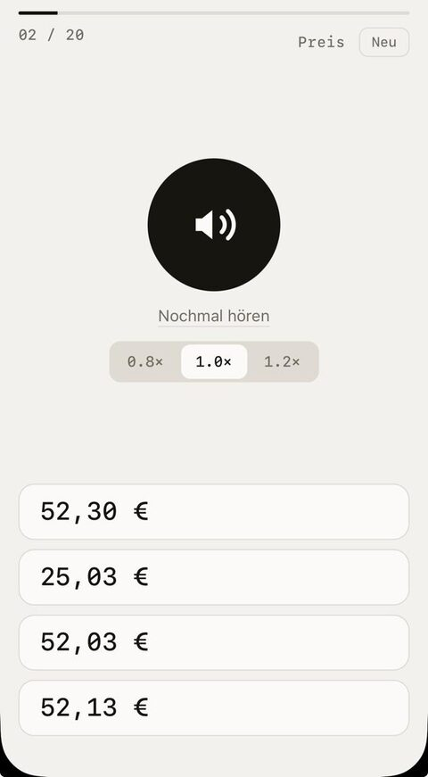

github.com/NikKosmo
NikKosmo
Projects
-
zahlen-trainer
live · webSo you know what you are saying mit Karte, bitte to. Practice your understanding of prices.


Also as a Telegram mini-app: @zahlen_trainer_bot.
-
document-polishing
PythonWrite instructions a model can only read one way. Several models interpret each section, and everywhere they disagree is a line worth fixing.
-
german-learning
PythonThis is how I keep a constant flow of new cards into my Anki deck.
-
handoff
JavaScriptSend yourself an
obsidian://link and have it actually open. No dependencies, 37 test cases.Grew out of obsidian-redirect.